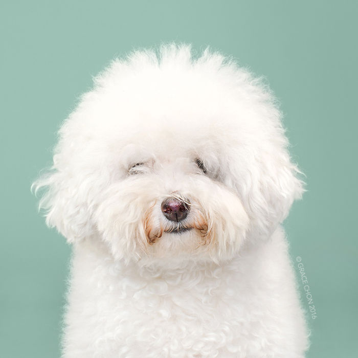
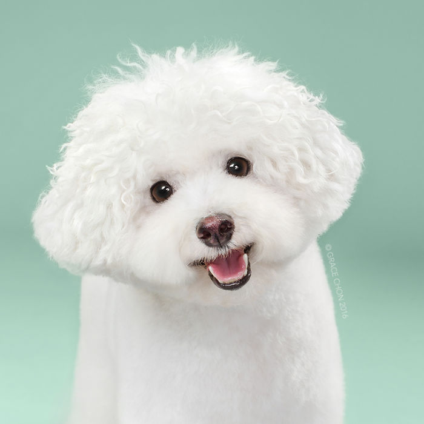
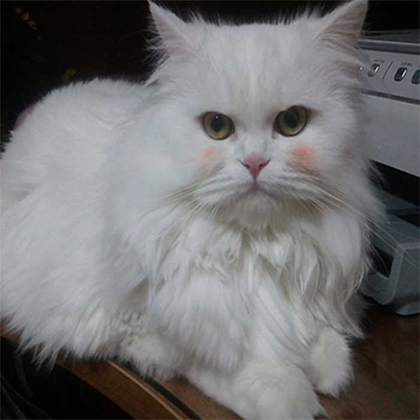
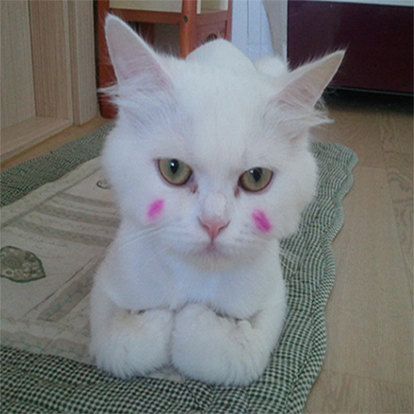

반려동물 알기
반려동물 알기
반려견 소개
건강관리
건강상식
미용
교감과 예절
사람과 동물과의 유대
반려견 예절
행정/법률정보
동물 보호법
동물 등록제
>
반려동물 미용
 
반려견
반려견의 첫 미용 시기는 5차 예방접종을 마친 후에 하는 것이 좋습니다. 너무 어릴 때 미용을 해주면 강아지가 큰 스트레스를 받을 수 있고, 이는 곧 질환으로 이어질 수 있기 때문에 주의해야 합니다. 또한 면역이 떨어져 피부질환 등에 노출 될 염려가 있습니다. 특히나 털이 자라면서 엉켜버리면 피부병의 원인이 될 수 있습니다. 이런 경우는 엉킨 털을 조심조심 잘라주거나, 미용을 해주는 것이 좋습니다.
 
반려묘
털 관리가 꼭 필요한 장모 고양이는 미용을 해주는 것이 좋습니다. 하지만 고양이는 예민한 동물이기 때문에 미용이 굉장히 까다롭습니다. 마취미용도 있지만, 전신마취를 해야 하기 때문에 고양이 몸에 많은 무리가 가게 되므로 무마취로 미용을 하는 것이 좋습니다. 하지만 전문 미용사가 아니면 크게 다칠 수 있기 때문에 많은 주의가 필요합니다.